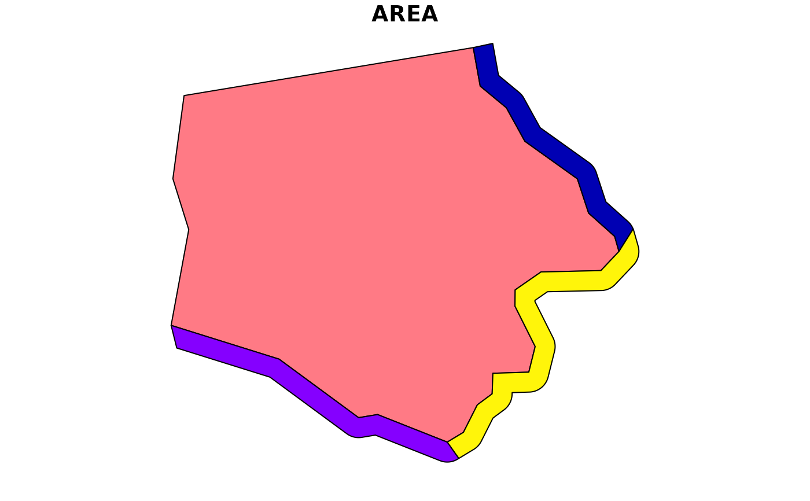
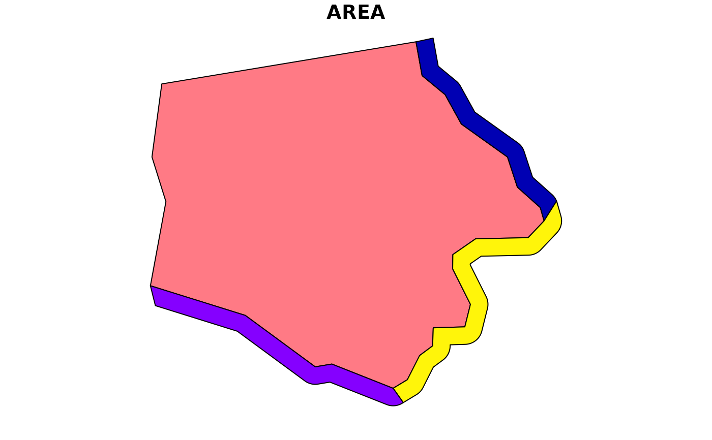

st_erase() extends sf::st_difference() by unioning the second parameter
by default, checking validity of inputs, and optionally (when flip = TRUE)
using sf::st_intersection() instead of sf::st_difference. st_trim() is
equivalent to st_erase() with flip set to TRUE.
Usage
st_erase(x, y, flip = FALSE, union = TRUE, combine = FALSE, ...)
st_trim(x, y, union = TRUE, combine = FALSE, ...)Arguments
- x
A
sf,sfc, orbboxobject to erase or trim.- y
A
sf,sfc, orbboxobject to use to erase or trim.- flip
If
TRUE, usesf::st_intersection()to "erase" geometry of x that intersects y; ifFALSEusesf::st_difference()to trim x to y geometry, Default:FALSE.- union
If
TRUE, unionywithsf::st_union()before applying difference/intersection; defaults toTRUE.- combine
If
TRUEandunion = TRUE, combineywithsf::st_combine()before unioning. Defaults toFALSE.- ...
arguments passed on to s2_options
Examples
nc <- read_sf_ext(system.file("shape/nc.shp", package = "sf"))
nc <- st_transform_ext(nc, 3657)
plot(
st_erase(
sf::st_buffer(nc[1, ], 1000),
nc[1, ]
),
max.plot = 1
)
 plot(
st_trim(
nc,
sf::st_buffer(nc[1, ], 2000)
),
max.plot = 1
)

plot(
st_trim(
nc,
sf::st_buffer(nc[1, ], 2000)
),
max.plot = 1
)
